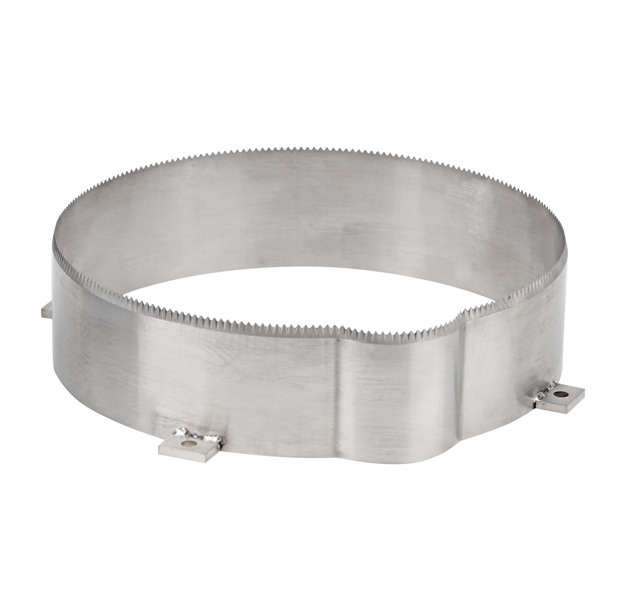

› Сервіс
Сервіс
Харчове пакувальне обладнання компанії AxisMetal – це високоякісні конструкції, створені за індивідуальним замовленням кожного клієнта. Основний напрямок нашої компанії – це виробництво та подальше технічне обслуговування різноманітних трейсилерів, повноцінних пакувальних ліній, термоформерів.
Ремонт харчового обладнання
Професійні послуги з ремонту пакувального обладнання від Axis Metal. Використовуємо
професійне обладнання, враховуємо всі побажання клієнта
Детальніше
Наладка харчового обладнання
Монтаж і наладка пакувального обладнання поточно-механізованих ліній і установок харчових
виробництв, їх діагностика в процесі ремонту, технічне обслуговування, складні та трудомісткі
роботи
Детальніше
У процесі продажу обладнання ми готові надати комплексний список сервісних послуг, який буде корисним для кожного:
У нашій команді працюють висококваліфіковані фахівці, готові швидко та якісно вирішити проблеми, що виникли у процесі вибору обладнання, його встановлення та подальшого обслуговування загалом.
Налагодження пакувального обладнання: список пристроїв для харчової промисловості

Обслуговування, ремонт харчового обладнання та проведення пусконалагоджувальних робіт – це незамінні процеси для різних видів техніки, що використовується під час фасування та пакування різноманітної продукції.
У нашій компанії AxisMetal тільки справжні професіонали – досвідчені інженери, готові допомогти виконати пусконалагоджувальні роботи для наступних видів пристроїв:
- вакуумні пакувальники з напольним типом установки;
- термоусадочні ємності (шринк танки);
- вакуумні пакувальники двокамерного типу;
- лінії флоу-пак;
- різноманітні зварювачі лотків - автоматичні, напівавтоматичні;
- вакуум-термоформувальні лінії для пакування товарів.
Крім того, наші майстри надають власну допомогу клієнтам за додатковою угодою. В результаті, кожен замовник зможе скористатися наступним списком послуг:
| Виїзд спеціаліста на об'єкт | Майстер виїжджає за вказаною клієнтом адресою для проведення всіх підготовчих робіт перед запуском техніки. |
| Навчання персоналу | Майстер проконсультує і продемонструє роботу пристроїв для персоналу замовника, відповідаючи на питання, що їх цікавлять. |
| Регулярне обслуговування | Технічне обслуговування харчового обладнання є невід'ємною частиною його якісної та злагодженої експлуатації. |
| Ремонтні роботи | Майстер виїжджає за вказаною адресою для ремонту зламаної техніки після закінчення дії гарантії. |
Додаткові послуги спеціалістів сервісної служби
Фахівці компанії AxisMetal надають не тільки власну допомогу в процесі вибору обладнання, його гарантійного обслуговування та проведення пусконалагоджувальних робіт, а і наступний список додаткових послуг::
01
Продаж якісних та оригінальних комплектуючих для різних видів пристроїв – для упаковки, фасування товарів, а також для жаркового та термозбіжного обладнання.
02
Кваліфікована допомога спеціалістів під час виведення техніки з експлуатації. Цей процес називається «консервацією».
03
Виконання ремонтних робіт обладнання для фасування та упаковки від інших виробників – вітчизняних та зарубіжних.
04
Проведення ретельної експертизи техніки перед тим, як виставити її на продаж.
Замовити додаткові послуги ви можете за вказаними на сайті номерами телефону або скористатися формою зворотного зв'язку.
Ремонт трейсилерів та термоформерів
У процесі виконання ремонту харчового обладнання, пакувальної техніки майстри допоможуть повернути колишню працездатність завдяки повноцінному відновленню всіх функціональних особливостей.
В результаті здійснюється:
- Відновлення пошкоджених контактів;
- Перевірка надійності фіксації трансформаторів;
- Заміна пускачів мотора;
- Ремонт, встановлення нових плат управління;
- Заміна витратних матеріалів у вигляді масла;
- Заміна нагрівачів, тефлонових стрічок, притискних планок;
- Обслуговування підйомних пристроїв та двигунів;
- Заміна ущільнювача, який вийшов з ладу – ущільнювачі камери для надійної герметизації;
- Встановлення нових фільтрів та інших виробів.
- Виготовлення ножів для трейсилерів та термоформерів на заміну

Крім того, команда спеціалістів забезпечує виконання допоміжних робочих процесів, за рахунок яких вдасться гарантувати поновлення колишньої працездатності вакуумного апарату.
Також ми проводимо сервісне обслуговування харчового обладнання, а саме – зварювальників (зварювачів імпульсного типу) від різних компаній-виробників – CAS, HUALIAN та інших брендів. Завдяки експлуатації необхідного набору інструментів та багаторічного досвіду нам вдається забезпечити якісний ремонт гарячих столів, відновити роботу блоків управління, встановити нові нагрівальні ножі та площини.
В результаті ми пропонуємо:
- Виїзд фахівця на об'єкт;
- Ремонтні та відновлювальні роботи;
- Модернізацію обладнання;
- Налаштування, програмування;
- Продаж оригінальних комплектуючих;
- Діагностику техніки;
- Навчання персоналу;
- Офіційні гарантії.
За бажанням клієнта ми можемо укласти договір на технічне обслуговування техніки протягом певного проміжку часу. Кожен замовник може розраховувати на оперативну та абсолютно безкоштовну консультацію щодо ремонтних робіт та обслуговування окремо взятих агрегатів. Додатково ми надаємо копію інструкції верстата з кодами всіх можливих помилок.